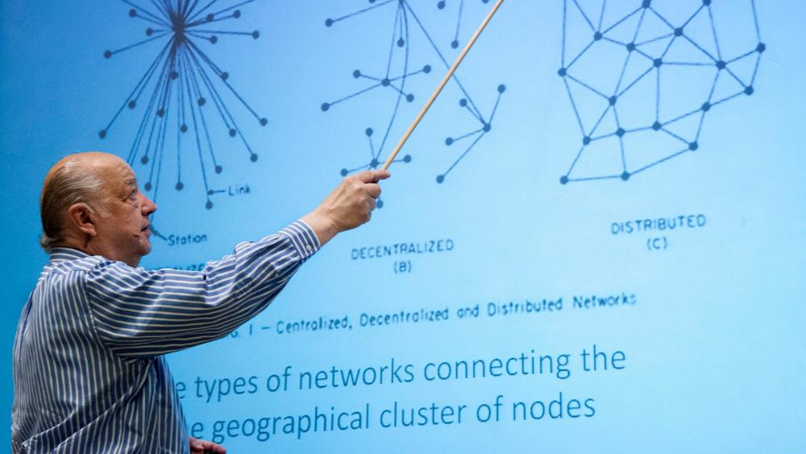

Paul Baran (1926-2011)
Élete
Paul Baran született 1926. április 29.-én. Ő volt a legfiatalabb a háromgyermekes zsidó családban és talán a születési időpont miatt a Pesach nevet kapta a szüleitől a Pavel mellé. Sokáig nem ismerkedett a lengyel élet nehézségeivel, mert a család már 1928 májusában kivándorolt Amerikába. Philadelphiában Morris „Moshe” Baran vegyesboltot nyitott, ahol a gyermek Baran a visszaemlékezései szerint egy kis piros teherautóval hordta az árucikkeket a raktárból a boltba.
Első munkahely
A kisgyermek aztán felnőtt és 1949-ben már a Dexler Institute of Technology (ma Drexler Egyetem) villamosmérnöki diplomájával indult el a pályája. Első munkahelye az Eckert-Mauchly Computer Company volt, ami elsőre talán egy „futottak még” cégnek látszik, de ha hozzátesszük, hogy Presper J. Eckert és John Mauchly építették meg az első elektronikus számítógépet, az ENIAC-ot a Pennsylvaniai Egyetemen, akkor a cég már egészen más értékelést nyer. A céget egyébként dühükben hozták létre, mert nem értettek egyet az Egyetem szabadalmi jogokra vonatkozó szabályzatával. Ma azt mondanánk, hogy start-up cégként jöttek létre, ami végül is igaz, de azért nem sokkal később már itt született meg az UNIVAC, ami önálló kereskedelmi brand lett a mainframe számítógépek piacán.
Rosen Engineering Products cég
1950-ben váltott, mert nem látott reményt az akkori alkatrészbázison megbízható rendszerek létrehozására, s a Raymond Rosen Engineering Products cégnél folytatta pályáját. A cég telemetriával és távvezérléssel foglalkozott, ahol elsősorban rádiós rendszereken keresztül valósítottak meg ilyen alkalmazásokat. Nem sokkal a belépése után, 1950. június 24-én kitört a koreai háború és innentől kezdve a cégnek sok megrendelése lett. Ezek kamatoztatására került át 1955-ben a Hughes Aircraft céghez, ahol radarok adatfeldolgozási rendszereivel foglalkozott. Ugyanebben az évben meg is nősült és Los Angelesbe költöztek át. Itt a munka mellett az UCLA-n (University of California, Los Angeles) 1959-ben megszerezte az MSc képesítést és megkezdte a doktori fokozat megszerzéséhez is a tanulmányait, de ezt a sok utazás és munka mellett végül is fel kellett adnia.
Kutatás eredményei
A kutatás eredményeit az On Distributed Communications című 11 jelentésből álló sorozatban foglalta össze, melyet a RAND 1964-ben Paul Baran nevével fémjelezve könyv formájában ki is adott. Ebben a teljesen új elvekre épülő megoldásban Baran egyértelművé tette, hogy az információt digitálisan kell továbbítani (ez akkor annyira nem volt nyilvánvaló, hogy pl. az AT&T telefonhálózaton nevelkedett mérnökei nem is vették komolyan egy jó ideig) és az átviendő információt „message block”-okra, azaz üzenetblokkokra javasolta bontani, ahol az egyes blokkok a hálózat redundáns útvonalain keresztül jutnak el a címzett számítógéphez. A szálak, amitől a két független javaslat az APRANET hálózat alapja lett, érdekesen futottak össze. 1967-ben rendezték meg először a Symposium on Operating Systems Principles nevű konferenciát Gatlinburgban, Tennessee államban. Ezen a konferencián az ARPA részéről egy Larry Roberts nevű kutató vázolta egy földrajzilag elosztott hálózat elképzelését, melyet ARPA net néven illetett, ezt a megnevezést vonták össze később ARPANET néven, amikor az internet első sejtjei összekapcsolódtak.